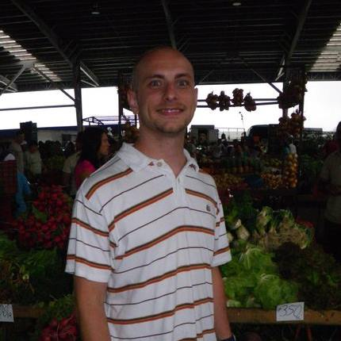

After high school I found myself working in the video rental business. I was pretty successful at my job and enjoyed interacting with people. I became manager of my own store in a large Oregon based business. Around 2002 people started coming in asking for movies that we just didn't have. When I would tell them that we didn't carry it they would say they were going to get it from Netflix. As time went on this occurred more and more frequently. So I started looking for a new a different job.
My search led me to one of those jobs that everyone hates needing and relies upon in emerencies. No, I wasn't a 911 operator, but with how people were acting on the other end of the phone you would think that's who they were calling. I was working phone customer service for one of the largest cell phone carriers in the USA. Again I was excelling at my job and moving up through the ranks. I was there for 8 years and the companies values changed and I was tired of sitting around listening to other peoples problems.
So I went to school. I got my associates in Salem, Oregon at the local community college and then transfered to PSU. I floundered between majors for a short time as most college students do. I finally settled into environmental science comfortably. Once I left school the political environment was shifting. The elections were fast approaching and everywhere was a mix of bated breath or aspiration. Once the results were in A new regime that is anti environment took office. So after many months of searching for a job and not finding one I decided to find a career that could transcend borders of countries, minds, and economics. One that would only be going up.
So talking to a friend and she was in a similar dilema with her field being phased out I decided to stop just playing with computers and get serious with them. That is how I wound up at epicodus. My passion for the natural building, people, and natural environments are still alive and well inside me. It's just now I am looking to marry all of them into something that will benefit me and those who are beyond my community. Technology is not the end it is just the means and mode of conveyance that I am going to use.